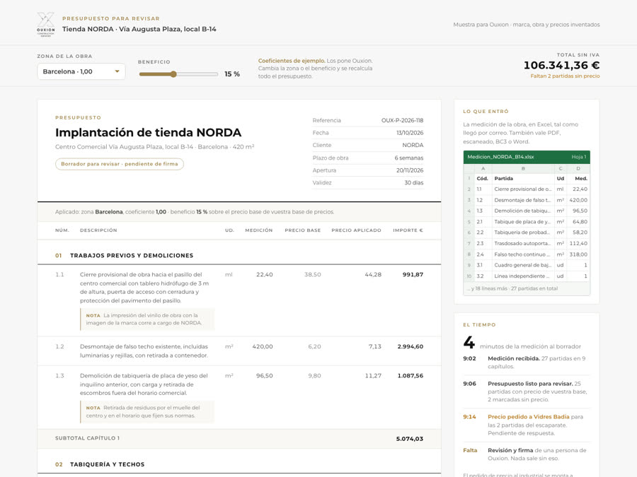
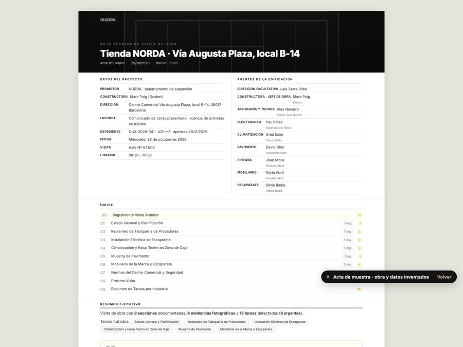
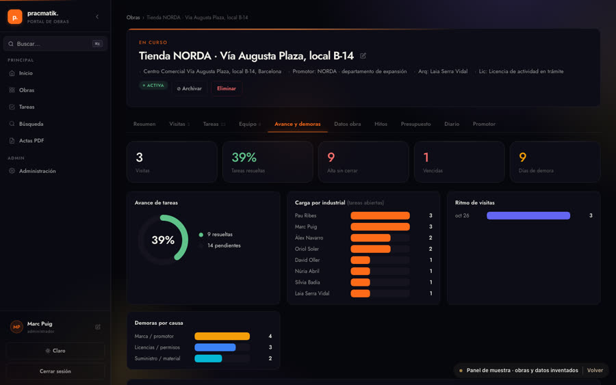

Pedir precio a los industriales solo
Si a una partida le falta precio, el sistema escribe al industrial de vuestra lista, recoge su respuesta y la mete en el presupuesto. Si pedís a tres, os pone la comparativa.
Dos vídeos cortos para enseñarlo en vuestra reunión, y además un presupuesto, un acta y un panel de obra de verdad para tocar, hechos con una tienda inventada como las que montáis vosotros.
La medición la pasamos a Excel, al lado tenemos la base con los precios de los industriales y le cargamos el porcentaje de beneficio.Sergio, en la llamada del 13 de octubre
Con vuestra base de precios y vuestro beneficio. No cambia vuestra forma de presupuestar, se quita la parte de copiar y buscar.
Una tienda en Palma no cuesta lo mismo que en Sabadell. Cada zona lleva su coeficiente, y lo ponéis vosotros.
Si una partida no está en vuestra base, sale marcada y se le pide al industrial. Nada se cuela sin que lo veáis.
El jefe de obra manda audios y fotos desde el móvil. Al salir de la tienda ya tiene el acta, y cada industrial sabe qué le toca y para cuándo.
Se entienden también sin sonido. Podéis ponerlos en pantalla tal cual.
De la medición que os manda el arquitecto al presupuesto listo para firmar, con vuestros precios y el coeficiente de cada ciudad.
De las notas de voz del jefe de obra al acta firmada, las tareas de cada industrial y quién ha retrasado la apertura.
No son dibujos. Son los documentos que sacan nuestros sistemas, con una obra inventada: la tienda NORDA en un centro comercial, 420 m², seis semanas, apertura el 20 de noviembre.

Cambiad la ciudad o el beneficio y mirad cómo se recalcula todo. Las partidas sin precio salen marcadas.
Abrir el presupuesto
Fotos en su sitio, redacción técnica y tareas por industrial con fecha.
Abrir el acta
Todas las tiendas abiertas a la vez, su avance y quién ha causado cada día de retraso.
Abrir el panelTodos los nombres, empresas e importes son inventados. Ningún dato procede de ningún cliente.
Según vuestra web lleváis unas 325 obras en 13 ciudades. Cada una con su coste de mano de obra, desplazamientos y dietas. Con el sistema, el presupuesto ya sale con el coeficiente de la ciudad, sin que nadie se acuerde de aplicarlo.
Obras según vuestra web y coeficiente de ejemplo sobre el precio base. Los coeficientes de verdad los ponéis vosotros y se cambian cuando queráis.
Hemos puesto números razonables para una empresa como la vuestra. Moved las barras con los vuestros de verdad.
Con el sistema contamos 40 minutos de revisión por presupuesto y 10 por acta. Inversión con precios públicos desde: 9.450 € de puesta en marcha y 480 € al mes por los dos, sin IVA. Lo que no se cuenta aquí: las obras que ganáis por contestar el mismo día.
Estas piezas se hacen a medida, sobre lo anterior. Os las contamos porque encajan con cómo trabajáis.
Si a una partida le falta precio, el sistema escribe al industrial de vuestra lista, recoge su respuesta y la mete en el presupuesto. Si pedís a tres, os pone la comparativa.
Todo lo que habéis presupuestado, consultable escribiendo como en un chat. Sin buscar el Excel de turno.
El responsable de expansión de la marca ve el avance de su tienda y las actas que vosotros elijáis. Deja de llamar para preguntar cómo va.
Al entregar la tienda, todo el historial de actas, tareas y fotos sale firmado y enviado a todos. Nadie puede decir que no lo sabía.
Si falta alguna, escribidnos y la añadimos aquí.
No hace falta tocar vuestro servidor. Funciona en el nuestro, con vuestros datos separados de los de cualquier otra empresa, y son vuestros: os los entregamos enteros cuando los pidáis. Se puede montar en vuestro servidor, pero entonces si algo falla no podemos entrar a arreglarlo en el momento, y eso en una obra con fecha de apertura no conviene.
No. Lee la medición: PDF (también escaneado), Excel, BC3 o Word. Si la medición sale de Revit, se exporta a Excel o BC3 y el sistema la lee igual. Preferimos decirlo claro antes que prometer algo que no hace.
Con los vuestros. Nos pasáis la base que tenéis hoy, en el formato que la tengáis, y el sistema la usa. Podéis cambiar precios, coeficientes de zona y beneficio cuando queráis.
Ningún presupuesto sale sin que una persona de Ouxion lo revise y lo firme. Lo que el sistema no tiene claro lo marca en ámbar, nunca lo rellena por su cuenta. No prometemos cero errores, prometemos que ninguno pasa sin que lo veáis.
No. Usa el móvil y Telegram, que ya sabe usar. Manda notas de voz, fotos y vídeos como haría por WhatsApp. El acta sale en castellano o en catalán según hable.
Lo miramos con vosotros. Si os funciona bien para fotos e incidencias, la diferencia es lo que pasa después: el acta redactada sola, las tareas a cada industrial con su fecha y el control de quién retrasa la apertura.
Precios públicos sin IVA: las actas, 3.450 € de puesta en marcha y 240 € al mes. Los presupuestos, desde 6.000 € y desde 240 € al mes. El precio exacto os lo damos por escrito cuando veamos una medición vuestra y vuestra base de precios.
Nos mandáis la medición de una obra real que ya hayáis presupuestado, y vuestro presupuesto de esa obra si queréis comparar. Os devolvemos el resultado y lo ponéis al lado del vuestro.
Pracmatik, de Barcelona. Hacemos automatizaciones para constructoras y estudios de arquitectura, y trabajamos en toda España. Todo se implanta a distancia.
La de cualquier tienda que ya hayáis presupuestado. Os devolvemos el presupuesto hecho con el sistema y lo comparáis con el vuestro. Es la forma más rápida de saber si os sirve.